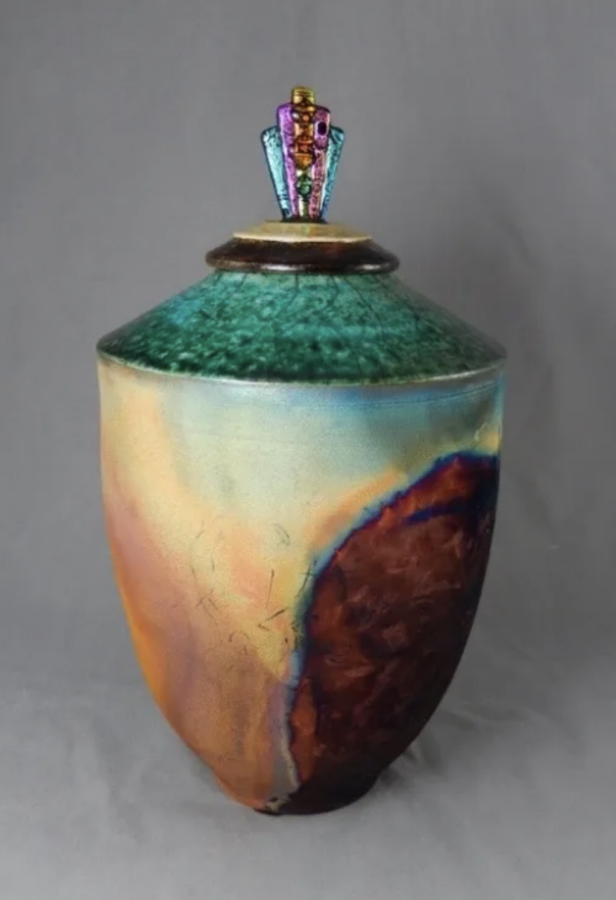

Chicago Alliance of Visual Artists Small Works Exhibition 2026
The Chicago Alliance of Visual Artists (CAVA) returns to the Elmhurst Artists’ Guild Gallery inside the Elmhurst Art Museum with their Small Works Exhibition, on view May 30–June 26, 2026. Featuring more than 100 works, the exhibition highlights the power and creativity of small-scale contemporary art across a wide range of media, including painting, sculpture,